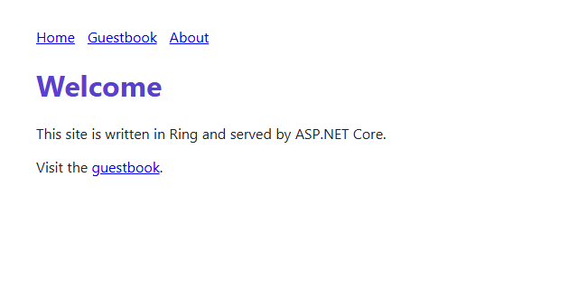
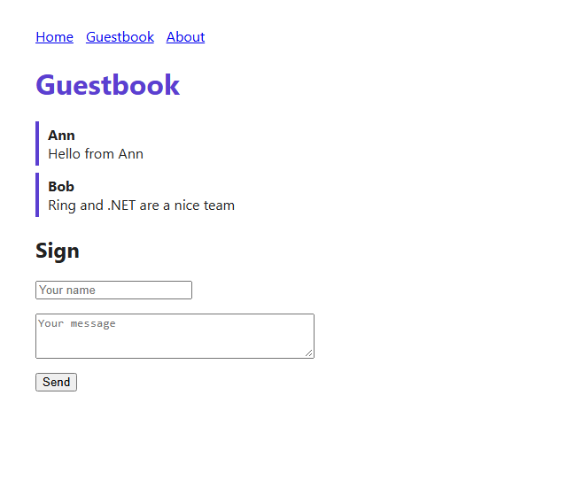

A small web site
Serve real HTML pages from Ring: a home page, an about page and a guestbook with a form. You will meet HTML forms, POST requests and the one security rule every web programmer must know.
What you will learn#
- serving HTML pages that share a frame,
- an HTML form and reading its fields,
- redirecting the work by status code (
400for bad input), - cross-site scripting and why you escape text,
- running the site for real.
The site#
| Address | Page |
|---|---|
GET / | the home page |
GET /about | an about page |
GET /guestbook | the entries, and a form to add one |
POST /guestbook | the form sends its fields here |
The program#
# a small web site - HTML pages, a form, links and a guestbook (ASP.NET Core)
load "dotnet.ring"
using {
"System.Net.Http"
"System.Text"
"RingDotNet.Web"
}
oServer = ""
oClient = ""
cUrl = ""
aEntries = [] # the guestbook: [name, message]
# Run it as a web site: ring ch07_website.ring --serve then open http://localhost:5090/
func main
cAddress = "http://127.0.0.1:0"
if find(sysargv,"--serve") > 0
cAddress = "http://localhost:5090"
ok
oServer = new WebServer(cAddress)
oServer.onGet("/","homePage")
oServer.onGet("/guestbook","guestbookPage")
oServer.onPost("/guestbook","signGuestbook")
oServer.onGet("/about","aboutPage")
cUrl = oServer.url()
if find(sysargv,"--serve") > 0
? "Open " + cUrl + " (Ctrl+C to stop)"
oServer.run()
return
ok
# a test: a client visits the pages
oClient = new HttpClient()
? "GET / -> " + summary(fetchPage("/"))
? "GET /about -> " + summary(fetchPage("/about"))
? "POST /guestbook -> " + summary(postForm("/guestbook","name=Ann&message=Hello+from+Ann"))
? "POST /guestbook -> " + summary(postForm("/guestbook","name=&message=no+name"))
? "GET /guestbook -> " + summary(fetchPage("/guestbook"))
? "entries stored : " + len(aEntries)
oServer.close()
# ---------------------------------------------------------------- the pages
# every page has the same frame: a function builds it
func page cTitle, cBody
return "<html><head><title>" + cTitle + "</title><style>body{font-family:Segoe UI,Arial;max-width:560px;margin:30px auto;color:#222}" +
"nav a{margin-right:14px}h1{color:#5b3fd1}.entry{border-left:4px solid #5b3fd1;padding:4px 10px;margin:8px 0}</style></head><body>" +
"<nav><a href='/'>Home</a><a href='/guestbook'>Guestbook</a><a href='/about'>About</a></nav>" +
"<h1>" + cTitle + "</h1>" + cBody + "</body></html>"
func homePage oRequest
return page("Welcome","<p>This site is written in Ring and served by ASP.NET Core.</p><p>Visit the <a href='/guestbook'>guestbook</a>.</p>")
func aboutPage oRequest
return page("About","<p>" + len(aEntries) + " entries so far.</p>")
func guestbookPage oRequest
cList = ""
for aEntry in aEntries
cList += "<div class='entry'><b>" + htmlText(aEntry[1]) + "</b><br>" + htmlText(aEntry[2]) + "</div>"
next
if cList = ""
cList = "<p>No entries yet. Be the first!</p>"
ok
cForm = "<h2>Sign</h2><form method='post' action='/guestbook'>" +
"<p><input name='name' placeholder='Your name'></p>" +
"<p><textarea name='message' placeholder='Your message' rows='3' cols='40'></textarea></p>" +
"<p><button type='submit'>Send</button></p></form>"
return page("Guestbook",cList + cForm)
func signGuestbook oRequest
cName = trim(oRequest.form("name"))
cMessage = trim(oRequest.form("message"))
if cName = "" or cMessage = ""
return [400,"text/html",page("Oops","<p>Please give a name and a message.</p><p><a href='/guestbook'>Back</a></p>")]
ok
aEntries + [cName,cMessage]
return [200,"text/html",page("Thank you","<p>Thanks, " + htmlText(cName) + "!</p><p><a href='/guestbook'>See the guestbook</a></p>")]
# NEVER put text typed by a visitor into HTML as it is: "<script>" would run in other visitors' browsers.
func htmlText cText
cText = substr(cText,"&","&")
cText = substr(cText,"<","<")
return substr(cText,">",">")
# ---------------------------------------------------------------- a client for the test
func fetchPage cPath
return send(oClient.GetAsync(cUrl + cPath))
func postForm cPath, cForm
oContent = new StringContent
oContent.@New([ :content = cForm, :encoding = new Encoding().UTF8, :mediaType = "application/x-www-form-urlencoded" ])
return send(oClient.PostAsync([ :requestUri = cUrl + cPath, :content = oContent ]))
func send oTask
for nTry = 1 to 50
if oServer.serveOne(100)
exit
ok
next
oTask.Wait(NULL)
oResponse = oTask.Result
oBody = oResponse.Content.ReadAsStringAsync(NULL)
oBody.Wait(NULL)
return [oResponse.StatusCode,oBody.Result]
func summary aResult
cBody = aResult[2]
nStart = substr(cBody,"<h1>")
cTitle = ""
if nStart > 0
cTitle = substr(cBody,nStart + 4,substr(cBody,"</h1>") - nStart - 4)
ok
return aResult[1] + ", page title '" + cTitle + "', " + len(cBody) + " characters"GET / -> OK, page title 'Welcome', 482 characters
GET /about -> OK, page title 'About', 387 characters
POST /guestbook -> OK, page title 'Thank you', 439 characters
POST /guestbook -> BadRequest, page title 'Oops', 437 characters
GET /guestbook -> OK, page title 'Guestbook', 665 characters
entries stored : 1To run it as a real site:
ring ch07_website.ring --servethen open http://localhost:5090/ in a browser.


This program uses a generic function (dnNew) where a class cannot be used. The lesson The generic functions explains them.
How it works#
One frame for all pages#
The function page(cTitle, cBody) builds the whole HTML text: a title, a few lines of style, a navigation bar and the body. Every handler calls it, so every page looks the same and a change of design is made in one place. A handler returns a text; the server sends it as text/html.
The form#
<"t">class="k">form method='post' action='/guestbook'>
<"t">class="k">input name='name' placeholder='Your name'>
<"t">class="k">textarea name='message' ...></"t">class="k">textarea>
<"t">class="k">button type='submit'>Send</"t">class="k">button>
</"t">class="k">form>When the visitor presses Send, the browser sends a POST to /guestbook with the body name=Ann&message=Hello+from+Ann (spaces become +). In the handler, oRequest.form("name") returns the decoded field.
Validation and status codes#
If a field is empty the handler answers [400, "text/html", page(...)]: 400 Bad Request, with a page that explains the problem. A browser shows the page; a program calling the site sees the status.
Escaping: the one rule#
Never put text from a visitor into HTML as it is. If a visitor writes <script>steal()</script> as a message and you paste it into the page, the script runs in the browser of everybody who opens the guestbook. This attack is called cross-site scripting (XSS). The function htmlText replaces &, < and > by &, < and >, so the text is shown, not executed. Use it for everything that came from outside.
State#
aEntries is a global list: all visitors share it, and it disappears when the server stops. For lasting data use a database as in the tutorial A web service with a database.
The test client#
The program also acts as a visitor: it fetches pages and posts a form with HttpClient, using the same serveOne pattern as the tutorial HTTP. Posting a form needs the content type application/x-www-form-urlencoded; the client builds the content with named arguments: dnNew("StringContent",[ :content = ..., :encoding = ..., :mediaType = ... ]).
What you learned#
- pages are texts; a function can build the common frame,
- forms send fields by POST;
oRequest.form("name")reads them, - answer errors with the right status,
- always escape what visitors write.
Exercises#
- Add a page
/statsthat shows the number of entries and the longest message. - Show the newest entry first.
- Limit a message to 200 characters and refuse longer ones with a
400. - Store the entries in a SQLite file with
RingDatabase, so that they survive a restart.